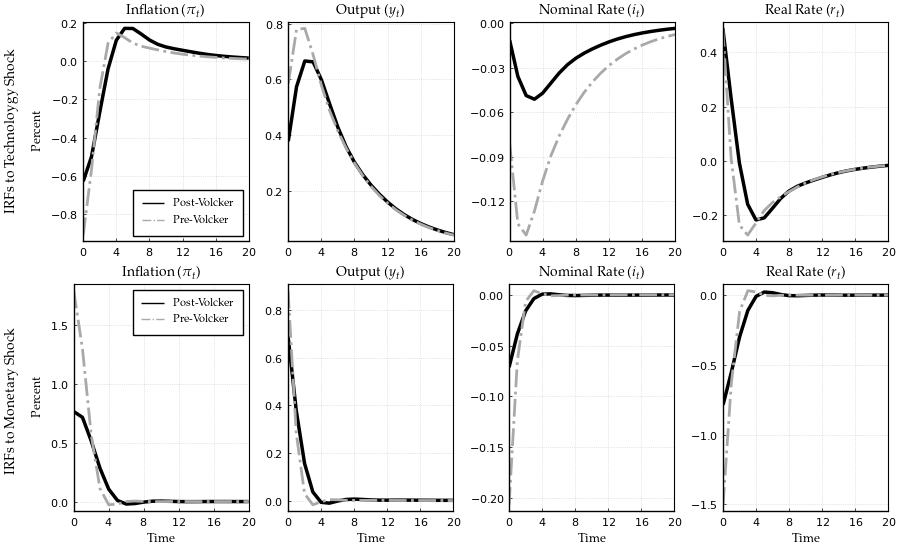

Replication of the Quantitative Analysis in Afrouzi and Yang (2020)
This notebook replicates the qunatitative analysis in Afrouzi and Yang (2020) using the methods and the solver from Afrouzi and Yang (2020).
 to run and modify the following code (no software is needed on the local machine).
to run and modify the following code (no software is needed on the local machine).
Contents
- Setup
- A Three-Equation RI Model
- Matrix Representation
- Initialization
- Functions
- Solution
- Simulation
- Impulse Response Functions
Setup
Households
Households are fully rational and maximize their life-time utilities:
where
Here $\mathbb{E}_{t}^{f}\left[\cdot\right]$ is the full information rational expectation operator at time $t$. Since the main purpose of this paper is to study the effects of nominal rigidity and rational inattention among firms, I assume that the household is fully informed about all prices and wages. $B_{t}$ is the demand for nominal bond and $R_{t-1}$ is the nominal interest rate. $L_{i,t}$ is firm-specific labor supply of the household, $W_{i,t}$ is the firm-specific nominal wage, and $\Pi_{t}$ is the aggregate profit from the firms. $C_{t}$ is the aggregator over the consumption for goods produced by firms. $\theta$ is the constant elasticity of substitution across different firms.
Firms
There is a measure one of firms, indexed by $i$, that operate in monopolistically competitive markets. Firms take wages and demands for their goods as given, and choose their prices $P_{i,t}$ based on their information set, $S_{i}^{t}$, at that time. After setting their prices, firms hire labor from a competitive labor market and produce the realized level of demand that their prices induce with a production function,
where $L_{i,t}$ is firm $i$'s demand for labor. I assume that shocks to $A_{t}$ are independently and identically distributed and the log of the productivity shock, $a_{i,t}\equiv\log(A_{t})$, follows a AR(1) process:
Then, firm $i$'s nominal profit from sales of all goods at prices $\{P_{i,j,t}\}_{j=1}^N$ is given by
where $Y_t$ is the nominal aggregate demand.
At each period, firms optimally decide their prices and signals subject to costs of processing information. Firms are rationally inattentive in a sense that they choose their optimal information set by taking into account the cost of obtaining and processing information. At the beginning of period $t$, firm $i$ wakes up with its initial information set, $S_{i}^{t-1}$. Then it chooses optimal signals, $s_{i,t}$, from a set of available signals, $\mathcal{S}_{i,t}$, subject to the cost of information which is linear in Shannon's mutual information function. Denote $ \omega $ as the marginal cost of information processing. Firm $i$ forms a new information set, $S_i^t = S_i^{t-1} \cup s_{i,t}$, and sets its new prices, $P_{i,t}$, based on that.
The firm $i$ chooses a set of signals to observe over time $(s_{i,t} \in \mathcal{S}_{i,t})_{t=0}^\infty$ and a pricing strategy that maps the set of its prices at $t-1$ and its information set at $t$ to its optimal price at any given period, $P_{i,t}:(S_i^t)\rightarrow \mathbb{R}$ where $S_i^t=S_i^{t-1}\cup s_{i,t} = S_i^{-1} \cup \{s_{i,\tau}\}_{\tau=0}^t$ is the firm's information set at time $t$. Then, the firm $i$'s problem is to maximize the net present value of its life time profits given an initial information set:
where $\Lambda_t$ is the stochastic discount factor and $\mathbb{I} ( S_{i}^t ; (A_{\tau},W_{i,\tau},P_\tau,Y_\tau)_{\tau \leq t} | S_i^{t-1} )$ is the Shannon's mutual information function.
Monetary Policy
Monetary policy is specified as a standard Talor rule:
where $u_t \sim N(0,\sigma_{u}^2)$ is the monetary policy shock.
A Three-Equation GE Rational Inattention Model
Our general equlibrium model is characterized by the following three equations with two stochastic processes of technology ($a_{t}$) and monetary policy shocks ($u_t$):
where $\mathbb{E}_{i,t}[\cdot]$ is the firm $i$'s expectation operator conditional on her time $t$ information set, $x_t = y_t - y_t^n$ is the output gap, $y_{t}^{n}=\frac{1+\psi}{\sigma+\psi}a_{t}$ is the natural level of output, $i_t$ is the nominal interest rate, and $\alpha = \frac{\sigma+\psi}{1+\psi\theta}$ is the degree of strategic complementarity.
Matrix Representation
Firms wants to keep track of their ideal price, $p_{i,t}^* = p_t + \alpha x_t$. Notice that the state space representation for $p_{i,t}^*$ is no longer exogenous and is determined in the equilibrium. However, we know that this is a Guassian process and by Wold's theorem we can decompose it to its $MA(\infty)$ representation:
where $\Phi_a(.)$ and $\Phi_u(.)$ are lag polynomials. Here, we have basically guessed that the process for $p_{i,t}^*$ is determined uniquely by the history of monetary shocks which requires that rational inattention errors of firms are orthogonal (See Afrouzi (2020)).
Since we cannot put $MA(\infty)$ processes in the computer and have to truncate them. However, we know that for stationary processes we can arbitrarily get close to the true process by truncating $MA(\infty)$ processes. Our problem here is that $p_{i,t}^*$ has a unit root and is not stationary. We can bypass this issue by re-writing the state space in the following way:
here $\tilde{\varepsilon}_{u,t}$ is the unit root of the process and basically we have differenced out the unit root from the lag polynomial, and $\phi_u(L)=(1-L)\Phi_u(L)$. Notice that since the original process was difference stationary, differencing out the unit root means that $\phi_u(L)$ is now in $\ell_2$, and the process can now be approximated arbitrarily precisely with truncation.
For ease of notation, let $z_t = (\varepsilon_{a,t}, \varepsilon_{u,t})$ and $\tilde{z}_t = (\varepsilon_{a,t}, \tilde{\varepsilon}_{u,t})$. For a length of truncation $L$, let $\vec{x}_t' \equiv ({z}_t,{z}_{t-1},\dots,{z}_{t-(L+1)})\in\mathbb{R}^{2L}$ and $\vec{\mathbf{x}}_t' \equiv (\tilde{z}_t,\tilde{z}_{t-1},\dots,\tilde{z}_{t-(L+1)})\in\mathbb{R}^{2L}$. Notice that
where $\mathbf{I}$ is a $2 \times 2$ identity matrix, $\mathbf{\Lambda}$ is a diagonal matrix where $\mathbf{\Lambda}_{(2i,2i)} = 1$ and $\mathbf{\Lambda}_{(2i-1,2i-1)}=0$ for all $i={1,2,\cdots,L}$, and $\mathbf{M}$ is a shift matrix:
Then, note that $p_{i,t}^*\approx \mathbf{H} '\vec{\mathbf{x}}_{t}$ where $\mathbf{H}\in \mathbb{R}^{2L}$ is the truncated matrix analog of the lag polynominal, and is endogenous to the problem. Our objective is to find the general equilibrium $\mathbf{H}$ along with the optimal information structure that it implies.
Moreover, note that
We will solve for $\mathbf{H}$ by iterating over the problem. In particular, in iteration $n\geq 1$, given the guess $\mathbf{H}_{(n-1)}$, we have the following state space representation for the firm's problem
Now, note that
Let x_t = \mathbf{H}{x}'\vec{x}{t} $, i_t = \mathbf{H}{i}'\vec{x}{t} $, and \pit = \mathbf{H}{\pi}'\vec{x}{t} = \mathbf{H}{p}'(\mathbf{I} - \mathbf{\Lambda} \mathbf{M}')^{-1} (\mathbf{I} - \mathbf{M}') \vec{x}_t $. Then from the households Euler equation, we have:
Also, the Talyor rule gives:
These give us $\mathbf{H}_{x}$ and $\mathbf{H}_{i}$ and we update new $\mathbf{H}_{(n)}$ using:
We iterate until convergence of $\mathbf{H}_{(n)}$.
Initialization
Load DRIPs solver and other packages:
using DRIPs;
using BenchmarkTools, LinearAlgebra, GLM, Statistics, Suppressor, Printf;
using PyPlot; rc("text", usetex="True") ;
rc("font",family="serif",serif=:"Palatino") ;
using Plots, LaTeXStrings; pyplot() ;
nothing #hideSet parameters:
struct param
β; σ; ψ; θ; α; # Deep parameters
ϕ_π; ϕ_x; ϕ_dy; ρ; # Monetary policy parameters
ρa; ρu; σa; σu; # Shock paramters
end###Assign model parameters
σ = 2.5 ; #Risk aversion
β = 0.99 ; #Time discount
ψ = 2.5 ; #Inverse of Frisch elasticity of labor supply
θ = 10 ; #Elasticity of substitution across firms
α = (σ+ψ)/(1+ψ*θ) ; #Strategic complementarity (1-α)
nothing #hide###Assign monetary policy parameters: post-Volcker
ϕ_π = 2.028 ; #Taylor rule response to inflation
ϕ_x = 0.673/4 ; #Taylor rule response to output
ϕ_dy = 3.122 ; #Taylor rule response to growth
ρ = 0.9457 ; #interest rate smoothing
nothing #hide###Assign monetary policy parameters: pre-Volcker
ϕ_π_pre = 1.589 ; #Taylor rule response to inflation
ϕ_x_pre = 1.167/4 ; #Taylor rule response to output
ϕ_dy_pre= 1.028 ; #Taylor rule response to output growth
ρ_pre = 0.9181 ; #interest rate smoothing
nothing #hide###Assign parameters governing shock processes
ρu = 0.0 ; #persistence of MP shock (post-Volcker)
σu = 0.279 ; #S.D. of MP shock (post-Volcker)
ρu_pre = 0.0 ; #persistence of MP shock (pre-Volcker)
σu_pre = 0.535 ; #S.D. of MP shock (pre-Volcker)
nothing #hide###Calibrated parameters
ρa = 0.85 ; #persistence of technology shock
σa = 1.56 ; #S.D. of technology shock
ω = 0.773 ; #marginal cost of information
nothing #hide###Parameters for simulation/irfs
simT = 50000 ;
nburn = 500 ;
T = 20 ;
nothing #hidePrimitives of Drip
numshock= 2 ; #number of shocks
L = 160 ; #length of trunction
M = [zeros(1,L-1) 0; Matrix(I,L-1,L-1) zeros(L-1,1)];
M = M^2 ;
J = zeros(L,L); J[2,2] = 1 ;
Lambda = zeros(L,L);
for i = 1:Int64(L/numshock); Lambda[i*numshock,i*numshock] = 1; end
A = M + J ;
eye = Matrix(I,L,L);
nothing #hideFunctions
We start with a function that solves the GE problem and returns the solution in a Drip structure:
function agg_drip(p::param,ω,A,Q,M,Lambda,
Ha, #state space rep. of a
Hu; #state space rep. of u
H0 = Hu+Ha, #optional: initial guess for H0
Sigma = A*A'+Q*Q',#optional: initial guess for Σ_0
Omega = H0*H0', #optional: initial guess for Ω
maxit = 10000, #optional: max. iterations for GE code
maxit_in = 100, #optional: max. iterations for solving DRIP
tol = 1e-4, #optional: tolerance for iterations
w = 1) #optional: update weight for RI
err = 1;
iter = 1;
L = length(H0);
eye = Matrix(I,L,L);
temp0 = (eye-M)*inv(eye - M*Lambda') ;
Htemp1 = (p.σ*(eye-p.ρ*M)*(M'-eye) - (1-p.ρ)*(p.ϕ_x*eye + p.ϕ_dy*(eye-M))) ;
Htemp2 = (1-p.ρ)*p.ϕ_π*eye - (eye-p.ρ*M)*M' ;
Htemp3 = (1+p.ψ)/(p.σ+p.ψ)*((1-p.ρ)*p.ϕ_dy*(eye-M) - p.σ*(eye-p.ρ*M)*(M'-eye)) ;
while (err > tol) & (iter < maxit)
if iter == 1
global ge = Drip(ω,p.β,A,Q,H0;
Ω0=Omega, Σ0=Sigma, w=w, maxit=maxit_in);
else
global ge = Drip(ω,p.β,A,Q,H0;
Ω0=ge.ss.Ω, Σ0=ge.ss.Σ_1, w=w, maxit=maxit_in);
end
XFUN(jj) = ((eye-ge.ss.K*ge.ss.Y')*ge.A)^jj * (ge.ss.K*ge.ss.Y') * (M')^jj
X = DRIPs.infinitesum(XFUN; maxit=200, start = 0); #E[x⃗]=X×x⃗
global Hp = X'*H0 ;
global Hπ = temp0*Hp ;
Hπ[L-20:end,:] .= 0
global Hx = (Htemp1)\(Htemp2*Hπ + Htemp3*Ha + Hu) ;
global H1 = Hp + p.α*(eye - M*Lambda')*Hx ;
err= 0.5*norm(H1-H0,2)/norm(H0)+0.5*err;
H0 = H1;
cap = DRIPs.capacity(ge, unit = "bit")
if iter == maxit
print("***GE loop hit maxit -- no convergence\n")
elseif mod(iter,50) == 0
println(" Iteration $iter. Error: $err. Capacity: $cap.")
end
iter += 1;
end
return(ge,H1,Hx,Hp,Hπ)
end;
nothing #hideModel Solution
Post-Volcker Calibration
Start with post-Volcker calibration:
Q = zeros(L,2); Q[1,1]=σa; Q[2,2]=σu;
Ha_post = ρa.^(0:1:L/2-1) ;
Hu_post = ρu.^(0:1:L/2-1) ;
Ha_post = kron(Ha_post,[1,0])[:,:] ;
Hu_post = kron(Hu_post,[0,1])[:,:] ;
p = param(β,σ,ψ,θ,α,ϕ_π,ϕ_x,ϕ_dy,ρ,ρa,ρu,σa,σu) ;
nothing #hideGet initial guess
print("\nGet initial guess for post-Volcker solutions\n")
@time begin
@suppress agg_drip(p,ω,A,Q,M,Lambda,Ha_post,Hu_post;
w=0.95, maxit=300, maxit_in=5);
end;
nothing #hide
Get initial guess for post-Volcker solutions
60.798645 seconds (3.90 M allocations: 110.866 GiB, 7.55% gc time)
Solve the model: Post-Volcker
print("\nSolve for the post-Volcker model:\n");
@time (ge_post,H1_post,Hx_post,Hp_post,Hπ_post) =
agg_drip(p,ω,A,Q,M,Lambda,Ha_post,Hu_post;
H0 = H1,
Sigma = ge.ss.Σ_1,
Omega = ge.ss.Ω,
w=0.95, maxit=5000, maxit_in=500) ;
Hy_post = Hx_post + (1+ψ)/(σ+ψ)*Ha_post ;
Hi_post = M'*Hπ_post + σ*(M'-eye)*Hy_post ;
Hr_post = Hi_post - (M')*Hπ_post ;
nothing #hide
Solve for the post-Volcker model:
Iteration 50. Error: 0.00019955553628239823. Capacity: 1.1862271072482864.
Iteration 100. Error: 0.0001744872805571109. Capacity: 1.1857495656383183.
Iteration 150. Error: 0.00015864561622833798. Capacity: 1.18530140435572.
Iteration 200. Error: 0.00014625771320174962. Capacity: 1.1849474294457745.
Iteration 250. Error: 0.00013581998821178998. Capacity: 1.184782449923788.
Iteration 300. Error: 0.00012822204892082466. Capacity: 1.1844767889679662.
Iteration 350. Error: 0.00012052948044002251. Capacity: 1.184205165427262.
Iteration 400. Error: 0.0001177295005858932. Capacity: 1.1839682745514049.
Iteration 450. Error: 0.00011038503577128138. Capacity: 1.1838080473974388.
Iteration 500. Error: 0.00011286983266623046. Capacity: 1.1835142347515875.
Iteration 550. Error: 0.00011083164494455719. Capacity: 1.1835967086043597.
123.430879 seconds (2.84 M allocations: 224.654 GiB, 6.81% gc time)
Pre-Volcker Calibration
Then, pre-Volcker calibration:
Q_pre = zeros(L,2); Q_pre[1,1]=σa; Q_pre[2,2]=σu_pre;
Ha_pre = ρa.^(0:1:L/2-1) ;
Hu_pre = ρu_pre.^(0:1:L/2-1) ;
Ha_pre = kron(Ha_pre,[1,0])[:,:] ;
Hu_pre = kron(Hu_pre,[0,1])[:,:] ;
p_pre = param(β,σ,ψ,θ,α,ϕ_π_pre,ϕ_x_pre,ϕ_dy_pre,
ρ_pre,ρa,ρu_pre,σa,σu_pre) ;
nothing #hideGet initial guess: Pre-Volcker
print("\nGet initial guess for pre-Volcker solutions\n")
@time begin
@suppress agg_drip(p_pre,ω,A,Q_pre,M,Lambda,Ha_pre,Hu_pre;
H0 = H1_post,
Sigma = ge_post.ss.Σ_1,
Omega = ge_post.ss.Ω,
w=0.95, maxit=300, maxit_in=5) ;
end;
nothing #hide
Get initial guess for pre-Volcker solutions
59.055488 seconds (1.38 M allocations: 110.745 GiB, 7.18% gc time)
Solve the model: Pre-Volcker
print("\nSolve for the pre-Volcker model:\n");
@time begin (ge_pre,H1_pre,Hx_pre,Hp_pre,Hπ_pre) =
agg_drip(p_pre,ω,A,Q_pre,M,Lambda,Ha_pre,Hu_pre;
H0 = H1,
Sigma = ge.ss.Σ_1,
Omega = ge.ss.Ω,
w=0.95, maxit=5000, maxit_in=500) ;
end
Hy_pre = Hx_pre + (1+ψ)/(σ+ψ)*Ha_pre ;
Hi_pre = M'*Hπ_pre + σ*(M'-eye)*Hy_pre ;
Hr_pre = Hi_pre - (M')*Hπ_pre ;
nothing #hide
Solve for the pre-Volcker model:
Iteration 50. Error: 0.0001485454079821963. Capacity: 1.6642946059660233.
Iteration 100. Error: 0.00011573353266253216. Capacity: 1.664275383320826.
29.126474 seconds (651.97 k allocations: 52.173 GiB, 7.29% gc time)
Model Simulation
Start with the simulation for post-Volcker:
print("\nSimulate the models:\n");
@time begin
sim_post = simulate(ge_post; T=simT, burn=nburn, seed=1) ;
x_shock = sim_post.x ;
xhat_avg = sim_post.x_hat ;
sim_π = (Hπ_post'*(eye-Lambda*M')*x_shock)' ;
sim_y = (Hy_post'*(eye-Lambda*M')*x_shock)' ;
sim_x = (Hx_post'*(eye-Lambda*M')*x_shock)' ;
mat_sim = [sim_π sim_y sim_x] ;
cor_sim = cor(mat_sim) ;
stat_post = vec([std(sim_π/100) std(sim_y/100) cor_sim[2,1]]) ;
s = @sprintf("==> Post-Volcker: std(π)=%5.3f, std(y)=%5.3f, corr(π,y)=%5.3f",
stat_post[1], stat_post[2], stat_post[3]) ;
println(s) ;
end
Simulate the models:
==> Post-Volcker: std(π)=0.015, std(y)=0.018, corr(π,y)=0.209
4.838214 seconds (3.10 M allocations: 10.956 GiB, 9.36% gc time)
Now simulate for pre-Volcker:
@time begin
sim_pre = simulate(ge_pre; T=simT, burn=nburn, seed=1) ;
x_shock_pre = sim_pre.x ;
xhat_avg_pre= sim_pre.x_hat ;
sim_π_pre = (Hπ_pre'*(eye-Lambda*M')*x_shock_pre)';
sim_y_pre = (Hy_pre'*(eye-Lambda*M')*x_shock_pre)';
sim_x_pre = (Hx_pre'*(eye-Lambda*M')*x_shock_pre)';
mat_sim_pre = [sim_π_pre sim_y_pre sim_x_pre] ;
cor_sim_pre = cor(mat_sim_pre) ;
stat_pre = vec([std(sim_π_pre/100) std(sim_y_pre/100) cor_sim_pre[2,1]]);
s = @sprintf("==> Pre-Volcker : std(π)=%5.3f, std(y)=%5.3f, corr(π,y)=%5.3f",
stat_pre[1],stat_pre[2],stat_pre[3]) ;
println(s) ;
end==> Pre-Volcker : std(π)=0.025, std(y)=0.020, corr(π,y)=0.245
3.328587 seconds (1.06 M allocations: 10.858 GiB, 14.24% gc time)
Impulse Response Functions
Reshape variables for IRFs
pi = reshape(Hπ_post,numshock,Int64(L/numshock))' ;
x = reshape(Hx_post,numshock,Int64(L/numshock))' ;
y = reshape(Hy_post,numshock,Int64(L/numshock))' ;
i = reshape(Hi_post,numshock,Int64(L/numshock))' ;
r = reshape(Hr_post,numshock,Int64(L/numshock))' ;
a = reshape(Ha_post,numshock,Int64(L/numshock))' ;
u = reshape(Hu_post,numshock,Int64(L/numshock))' ;
pi_pre = reshape(Hπ_pre,numshock,Int64(L/numshock))' ;
x_pre = reshape(Hx_pre,numshock,Int64(L/numshock))' ;
y_pre = reshape(Hy_pre,numshock,Int64(L/numshock))' ;
i_pre = reshape(Hi_pre,numshock,Int64(L/numshock))' ;
r_pre = reshape(Hr_pre,numshock,Int64(L/numshock))' ;
a_pre = reshape(Ha_pre,numshock,Int64(L/numshock))' ;
u_pre = reshape(Hu_pre,numshock,Int64(L/numshock))' ;
nothing #hidePlot IRFs:
#Draw IRFs
title1 = Plots.plot(ylabel = "IRFs to Technoloygy Shock",
guidefont = font(10),
grid = false, showaxis = false,
bottom_margin = 20Plots.px)
title2 = Plots.plot(ylabel = "IRFs to Monetary Shock",
guidefont = font(10),
grid = false, showaxis = false,
bottom_margin = -50Plots.px,
top_margin = 30Plots.px)
p1 = Plots.plot(0:T,[σa*pi[1:T+1,1],σa*pi_pre[1:T+1,1]],
title = L"Inflation ($\pi_t$)",
ylabel = "Percent",
guidefont = font(9),
yticks = -1:0.2:0.3,
label = ["Post-Volcker" "Pre-Volcker"],
legend = :bottomright,
legendfont = font(8),
color = [:black :darkgray],
linestyle = [:solid :dashdot],
)
p2 = Plots.plot(0:T,[σa*y[1:T+1,1],σa*y_pre[1:T+1,1]],
title = L"Output ($y_t$)",
legend = false,
color = [:black :darkgray],
linestyle = [:solid :dashdot],
)
p3 = Plots.plot(0:T,[σa*i[1:T+1,1],σa*i_pre[1:T+1,1]],
title = L"Nominal Rate ($i_t$)",
legend = false,
yticks = -0.15:0.03:0.0,
color = [:black :darkgray],
linestyle = [:solid :dashdot],
)
p4 = Plots.plot(0:T,[σa*r[1:T+1,1],σa*r_pre[1:T+1,1]],
title = L"Real Rate ($r_t$)",
legend = false,
color = [:black :darkgray],
linestyle = [:solid :dashdot],
)
p5 = Plots.plot(0:T,[-σu*pi[1:T+1,2],-σu_pre*pi_pre[1:T+1,2]],
title = L"Inflation ($\pi_t$)",
ylabel = "Percent",
xlabel = "Time",
guidefont = font(9),
label = ["Post-Volcker" "Pre-Volcker"],
legend = :topright,
legendfont = font(8),
color = [:black :darkgray],
linestyle = [:solid :dashdot],
)
p6 = Plots.plot(0:T,[-σu*y[1:T+1,2],-σu_pre*y_pre[1:T+1,2]],
title = L"Output ($y_t$)",
xlabel = "Time",
guidefont = font(9),
legend = false,
color = [:black :darkgray],
linestyle = [:solid :dashdot],
)
p7 = Plots.plot(0:T,[-σu*i[1:T+1,2],-σu_pre*i_pre[1:T+1,2]],
title = L"Nominal Rate ($i_t$)",
xlabel = "Time",
guidefont = font(9),
legend = false,
color = [:black :darkgray],
linestyle = [:solid :dashdot],
)
p8 = Plots.plot(0:T,[-σu*r[1:T+1,2],-σu_pre*r_pre[1:T+1,2]],
title = L"Real Rate ($r_t$)",
xlabel = "Time",
guidefont = font(9),
legend = false,
color = [:black :darkgray],
linestyle = [:solid :dashdot],
)
l = @layout [
a{0.001w} Plots.grid(1,4)
a{0.001w} Plots.grid(1,4)
]
Plots.plot(title1,p1,p2,p3,p4,title2,p5,p6,p7,p8,
layout = l,
gridstyle = :dot,
gridalpha = 0.2,
lw = [2.5 2],
titlefont = font(10),
xticks = (0:4:T),
xlim = (0,T),
tickfont = font(8),
size = (900,550),
framestyle = :box)
This page was generated using Literate.jl.